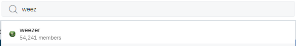
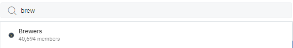
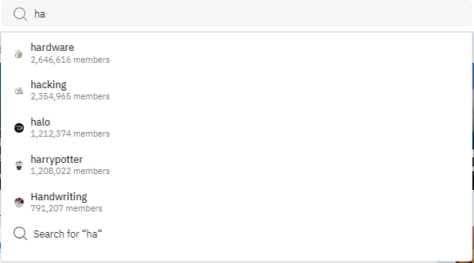
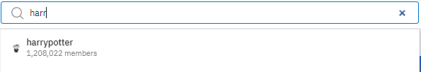

Usability Test
Task 1: Searching for an item
To start this task I used a random word generator to help me pick a 3 topics to search for. I then asked my mother and father (both inexperienced). I done loaded up an incognito tab for bothin order to prevent interference. I used the website here for random words. The words searched were; the band 'Weezer', the MLB team 'Milwaukee Brewers' and film/book series 'Harry Potter'. Lucky both were unfamiliar with bothe site and subjects
Weezer:

When starting the task I knew it would be simple as almost all things have a subreddit. So when starting I knew to track 2 things: How much of the word I had to type before it came up and how long it took for each member to find the topic. My mother found the search bar with ease. However, it took my father a moment to find it confusing it with the 'Create a Post' bar. He told me that the colour belding on the site made it difficult to know where to look and harder to see the bar. With Weezer, it took until both member til they had typed 'Weez' until they noticed r/Weezer appeared however it was the number 1 option.
Brewers:
The next prompt I had gotten was the Milwaukee Brewers, a team within the MLB. Knowing that both had grasped a sense of understanding for how the site worked i expected almost identical results. Once the letters 'Brew' were typed in the r/brewers page had come up as the first option immediately.

Harry Potter
The final topic I searched for was r/harrypotter this topic was the best of the three results. I initally expected this to have the fastest results. Upon typing in 'Ha', r/harrypotter was the 4th result. However, neither memeber had noticed it. My mother quickly spotted the term once she had typed 'Har'.My father on the other hand only noticed the term once he typed in 'Harr', the topic appeared as the first option.


Results
I think this task has proved that it is relatively simple to search for topics on Reddit. Two inexperienced users found it easy to find 3 random topics. It did also prove that the bland colour scheme is an issue for newer users
Other Tasks